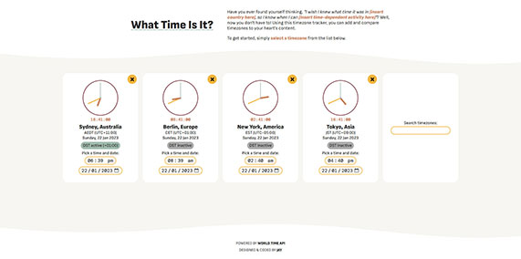

Welcome to my portfolio!
I'm Jay, a frontend developer living in Sydney.
Thanks for showing interest in my work! If you'd like to get in touch, here's where I can be found.
-
amberial.com
I did this website for my client, the developer of the game Amberial Dreams. Initially I was asked to implement an interface that displayed the game's featured levels, sourced from mod.io's REST API. However, I also offered to give the existing website an overall facelift, to bring it more in line with modern web trends.
For a more detailed writeup of my experience on this project, check out the README on Github.
-
Timezone Tracker
When the new year rolled around, I was thinking about timezone differences around the world and realised that I could build something to help me easily visualise this.
I also used this as an opportunity to learn React (and introduce myself to Netlify), which I really enjoyed.
For a more detailed writeup of my experience on this project, check out the README on Github.
-
This Website
After looking at a lot of web portfolios, I noticed that a lot of them used full-page hero sections and my hands got tired of scrolling after a little while! So I wanted my portfolio website to be more of an "expandable business card".
This website features a parallax scrolling background, automatic dark mode detection and manual theme selection (your choice is remembered if you refresh).
I decided not to incorporate any frameworks because I wanted to have a project that displayed my understanding of the foundations.
For a more detailed writeup of my learnings on this project, check out the README on Github.
If you're thinking of bringing me on board, here's what you need to know.
As a person
- I'm a game-artist-turned-frontend-developer with a honed eye for detail and an insatiable desire to expand my skillset
- I take my work very seriously, but I don't take myself seriously - I always try to bring a positive vibe to whatever team environment I'm in
- I'm a fast learner and I don't mind learning from my own mistakes, because I believe failure is a great teacher
- Similarly, I approach others with a constructive and encouraging attitude, and I'm always happy to share knowledge when it's needed
- I'm not afraid to push out of my comfort zone - I enjoy the struggle of learning new concepts because I know that persistence is rewarded
In the workplace
- I've developed a strong set of soft skills after a few years of freelancing in the indie games industry (both as an artist and a developer)
- I have a lot of experience working with various development teams and communicating with team leads, clients and colleagues
- I have worked on projects from inception, taken projects to the finish line, and worked on ongoing projects with existing codebases
- I'm very willing to adapt to other people's work practices and communication styles
- I hold my work to a high standard, but I'm practical enough to understand the diminishing returns of pursuing perfection (and scope creep)
- I've worked in demanding environments with short deadlines and limited budgets
- Having fallen in love with web development, I look forward to bringing these skills to meet challenges within a programming context
My resume is available on request. Have a nice day!